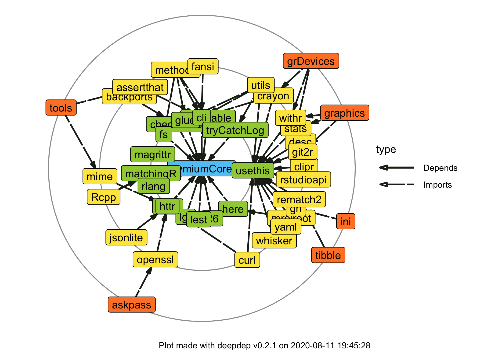

dymiumCore is an R package which provides a toolbox for developing a microsimulation model. While the core focus of the package is for modelling urban systems, dymium can be easily extended to apply in other contexts as well.
Why another microsimulation framework?
It is true that there is no shortage of open source microsimulation frameworks, but many of the existing ones often use a platform that doesn’t support data analysis as good as R, or use a programming langauge that many modellers may be unfamiliar with. Hence, those frameworks would not be the first choice for many modellers who are interested in microsimulation modelling but lack the programming skills or time to learn a programming langauge that is foreign and has no other benefits to them. The main philosophy of dymiumCore is to use the power of existing R packages to create functions and classes that are the basic building blocks of any microsimulation model, in general, and to allow an entire workflow from data preparation, model estimation, microsimulation, calibration to visualisation within only the R environment, where many other frameworks do not offer. This enhances reproducibility and maintainability of your microsimulation model and allow others to build on your work more easily. Read more…
Why dymiumCore?
- written in R
- easy to setup
- ready-to-use events see dymium-org/dymiumModules
- microsimulation events are modular, sharable and scalable
- equipped with the basic building blocks for building a microsimulation model that is flexible and extensible.
- can use parameters from various model objects (e.g.
stats::lm,stats::glm,caret::train,mlr::train).
Installation
You can install the released version of dymiumCore from Github with:
remotes::install_github("dymium-org/dymiumCore", ref = remotes::github_release())
The current development version on Github can be installed with:
remotes::install_github("dymium-org/dymiumCore")
Note that, dymiumCore is not yet on CRAN.
A Hello World Example!
This is a minimal example of how one can create a discrete-time microsimulation model with dymiumCore.
In this example, we have three events: aging, giving birth, and dying. The aging event increases age of all individuals by 1 year in each iteration, as control by the for loop. The giving birth event only changes the ‘give_birth’ variable of eligible female individuals (age between 18 to 50) to ‘yes’ if the transition for an individual is successful. The death event changes the age attribute of dying individuals to ‘-1’, which means once an individual is dead it will not be considered in any of the transition() or mutate_entity() function calls, as we apply filter_alive and a subset statement to them.
The first principle of dymiumCore is to keep all Entity objects and models (optionally) inside a World object. This allows us to construct a microsimulation model as a data analysis pipeline, which you will see below.
library(dymiumCore) library(data.table) # create models, all individuals have 5% of dying and fertile females have 5% of giving birth birth_model <- death_model <- list(yes = 0.05, no = 0.95) # prepare individual data ind_data <- data.table::copy(toy_individuals) %>% .[, .give_birth := "no"] # add a dummy column to store birth decision # create an Individual object ind <- Individual$new(.data = ind_data, id_col = "pid") # create a World object world <- World$new() # add the Individual object to ‘world’ world$add(x = ind) # create a pre-processing function filter_fertile <- function(.data) { .data[age %between% c(18, 50) & sex == "female"] } # run the microsimulation pipeline below for 10 iterations for (i in 1:10) { world$set_time(i) %>% # ageing mutate_entity(entity = "Individual", age := age + 1L) %>% # simulate giving birth transition(entity = "Individual", model = birth_model, attr = ".give_birth", preprocessing_fn = filter_fertile) %>% # add newborns, by cloning children of age 0 add_entity(entity = "Individual", newdata = ind_data[age == 0, ], check_relationship_id_cols = FALSE, target = .$entities$Individual$get_data()[.give_birth == "yes", .N]) %>% # reset the birth decision variable mutate_entity(entity = "Individual", .give_birth := "no") %>% # simulate dying transition(entity = "Individual", model = death_model, attr = "age", values = c(yes = -1L)) %>% # remove dead individuals remove_entity(entity = "Individual", subset = age == -1) %>% # log the total number of alive individuals at the end of the iteration add_log(desc = "count:Individual", value = .$entities$Individual$get_data()[, .N]) }
Note that, the line
value = .$entities$Individual$get_data()[age != -1L, .N]is using the world object’s placeholder which is called.for extracting the attribute data of individual agents. This is a feature ofmagrittr, to learn more about various ways that%>%can be used see its documentation page.
To get the attribute data of any Entity object use $get_data() method.
world$entities$Individual$get_data() #> pid hid age sex marital_status partner_id father_id mother_id #> 1: 1 1 81 male never married NA NA NA #> 2: 2 2 41 female never married NA NA NA #> 3: 4 3 48 male married 5 NA NA #> 4: 6 3 10 male not applicable NA 4 5 #> 5: 8 4 62 female married 7 NA NA #> --- #> 243: 400 39 0 female not applicable NA 96 97 #> 244: 401 39 0 female not applicable NA 96 97 #> 245: 402 39 0 female not applicable NA 96 97 #> 246: 403 39 0 female not applicable NA 96 97 #> 247: 404 3 0 male not applicable NA 4 5 #> .give_birth #> 1: no #> 2: no #> 3: no #> 4: no #> 5: no #> --- #> 243: no #> 244: no #> 245: no #> 246: no #> 247: no
The add_log() function allows any object to be stored in our World object for doing post-simulation analysis. In the example, we logged the number of individuals that were alive in each simulation year. We can extract the log data using get_log(). The value column of the log data by get_log() is a list column, this is to allow any object to be stored in value, so we must flatten in to integer to make the log data easier to work with.
# get log data log_data <- get_log(world) %>% .[, value := unlist(value)] print(log_data) #> time created_timestamp class tag desc value #> 1: 1 1592366410 World <NA> count:Individual 361 #> 2: 2 1592366410 World <NA> count:Individual 344 #> 3: 3 1592366410 World <NA> count:Individual 327 #> 4: 4 1592366410 World <NA> count:Individual 312 #> 5: 5 1592366410 World <NA> count:Individual 304 #> 6: 6 1592366410 World <NA> count:Individual 294 #> 7: 7 1592366410 World <NA> count:Individual 282 #> 8: 8 1592366410 World <NA> count:Individual 273 #> 9: 9 1592366410 World <NA> count:Individual 260 #> 10: 10 1592366410 World <NA> count:Individual 247
Let’s visualise how many individual agents are still alive at the end of the simulation.
library(ggplot2) #> Warning: package 'ggplot2' was built under R version 3.6.2 ggplot(data = log_data, aes(x = time, y = value)) + geom_col(aes(fill = value)) + geom_label(aes(label = value)) + labs(x = "Time", y = "Number of Individuals") + scale_x_continuous(n.breaks = 10) + guides(fill = "none") + theme_minimal(base_size = 16)

This is just an introductory example of dymiumCore, the real power of the package is in the building blocks and functions that allow you to create a large-scale microsimulation model that is easily maintainable and scalable model by breaking down each complex component into an event function as illustrated in dymium-org/dymiumExampleProject.
Documentation and Tutorials
For documentation and tutorials, please check our website at https://core.dymium.org.
Available modules
Please visit dymium-org/dymiumModules to see the available modules.
Try dymiumCore with an example project
Please visit dymium-org/dymiumExampleProject to learn more about this.
Collaboration
We are open to collaboration on this project. If you are interested, please email us at amarin at dymium.org.
Development plan (as of 3rd April 2020)
-
Version 0.1.0: (21 Jan 2020) Release all the basic building blocks for microsimulation modelling.
-
Version 0.1.6: Support
mlrintransision()andTransitionClassification. -
Version 0.1.7 & 0.1.8 : Introduce simpler APIs (
mutate_entity(),add_entity(),add_log(),transition()) for creating simple microsimulation pipelines. - Version 0.1.9: Support regression model creation from parameters.
-
Version 0.1.10: Support
mlr3andmlogitmodel objects in the Transition classes. - Version 0.1.11: Support multiple choice models (multinomial logit models (MNL) and MNL with varying alternatives) with utility functions for sampling and simulation. This will be the last milestone for version 0.1.
-
Version 0.1.6: Support
- Version 0.2.0: Implement model-based calibration.
- Version 0.3.0: Visualisation functions for life-courses, spatial data, etc.
- Version 0.4.0: Integration with dymiumGUI.
Recommended scholarly articles
To learn more about dynamic microsimulation modelling and some of its use cases please see these articles.
- O’Donoghue, C. (2001). Dynamic microsimulation: a methodological survey. Brazilian Electronic Journal of Economics, 4(2), 77.
- Li, J., & O’Donoghue, C. (2013). A survey of dynamic microsimulation models: uses, model structure and methodology. International Journal of microsimulation, 6(2), 3-55.
- Rutter, C. M., Zaslavsky, A. M., & Feuer, E. J. (2011). Dynamic microsimulation models for health outcomes: a review. Medical Decision Making, 31(1), 10-18.
- GouuAs, K. G., & Kitamura, R. (1992). Travel demand forecasting with dynamic microsimulation.
Dependencies
library(deepdep) dd <- deepdep::deepdep("dymiumCore", local = T, depth = 3) deepdep::plot_dependencies(dd)
